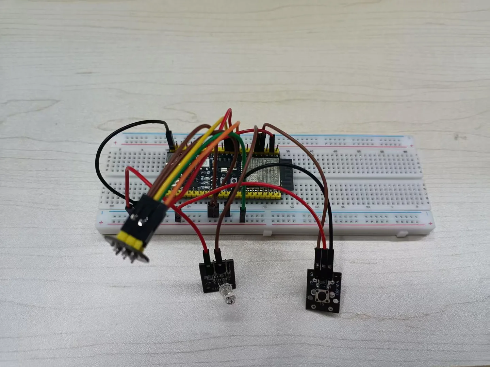

01LIGHT
灯到底
亮不亮。
软件里亮度值在变，硬件是否响应还没确认。下一步用串口直接闪灯，逐项排查 GPIO5、共地与模块供电。
GPIO5未确认串口 light
05 / FIELD RECORD · 2026-11-12
LAMP—1 的全部硬件，现在是一块面包板、一块 ESP32-S3、一颗麦克风、一个按键和一盏调试用的 LED。这一页不写愿景，只记录它真实跑通的部分、写完了但还没硬件的部分，以及明确没做成的部分。

BENCH PROTOTYPE / STAGE 0 BREADBOARD · NO ENCLOSURE01 / SCOPE
记录对象是阶段 0 的台架，不是整机。所有数字都能在仓库里找到出处：串口日志、联调实录与实测纪要。没侧的写「未实测」，不用估算值凑。
02 / HARDWARE
下面全部是现在正在用的硬件，含引脚。没有一件属于最终产品形态：连 LED 都只是调试负载，不进 BOM。
RIG-Arm 套件、MAX98357 功放、1.09″ TFT、总线舵机、GC0308 摄像头与 WS2812B 灯环均未到货，不在上表内。引脚定义见仓库 firmware/include/config.h。
03 / WHAT ALREADY RUNS
三列分别是：真机跑通过、代码写完等硬件、完全没开始。中间那一列最容易被误读成「做完了」——它只是代码写完了。
04 / MEASURED
全部来自 2026-11-10 至 11-12 的台架日志。样本量小，只能说明「链路通了」，不能当指标承诺。
| 环节 | 结果 | 说明 |
|---|---|---|
| 离线命令词 | 3 / 3 正确 | 置信度 prob 0.14–0.47，距 0.6 的及格线还有余量问题 |
| 云端 ASR | 200–400 ms | 偶发 1.5–2 s；需要 SNTP 对时，时钟偏差超 5 分钟直接失败 |
| 云端 LLM | 中位 1.6 s | 区间 1.2–1.8 s，只传文本，不上传音频 |
| 端到端 · 固定指令 | ≈3 s | 录音 2 s + 识别 1 s，本地词表命中、0 次模型调用 |
| 端到端 · 闲聊 | 4–5 s | 再叠加一轮大模型的时间 |
| 麦克风电平 | 40–90 / 200–1500 | 安静室内 / 正常说话，RMS 值，16 kHz 单声道 |
| TTS 首字延迟 | 未实测 | 功放与扬声器未接，合成结果只能存成文件 |
「3 / 3」是三次样本，不是识别率。要拿到 ≥8/10 的结论，还需要在 50 cm 距离下重数 10 次并记录 prob。
05 / STILL OPEN
这四条不写进功能表，但决定了这台机器现在能不能真的用。每一条都附了下一步怎么验。
软件里亮度值在变，硬件是否响应还没确认。下一步用串口直接闪灯，逐项排查 GPIO5、共地与模块供电。
代码完整，但从没有一次真实按下产生过日志。先用杜邦线短接 GPIO4 与 GND，分清是固件问题还是模块问题。
识别和问答都通了，唯独出声这一环没有硬件。TTS 目前只能生成文件，整机听不到它回答。
三把测试 Key 实测全部鉴权失败。上面的实测数据来自凭据还有效的那两天，换机器要重新配 Key 与账号。
离线命令词做到 10 次 ≥8 次，按键修通，文档与代码对齐。
离线命令词 + 云端大模型文本，先出串口与网页上的文字回答。
RIG-Arm 到位后先点亮麦、屏、喇叭，再上总线舵机。